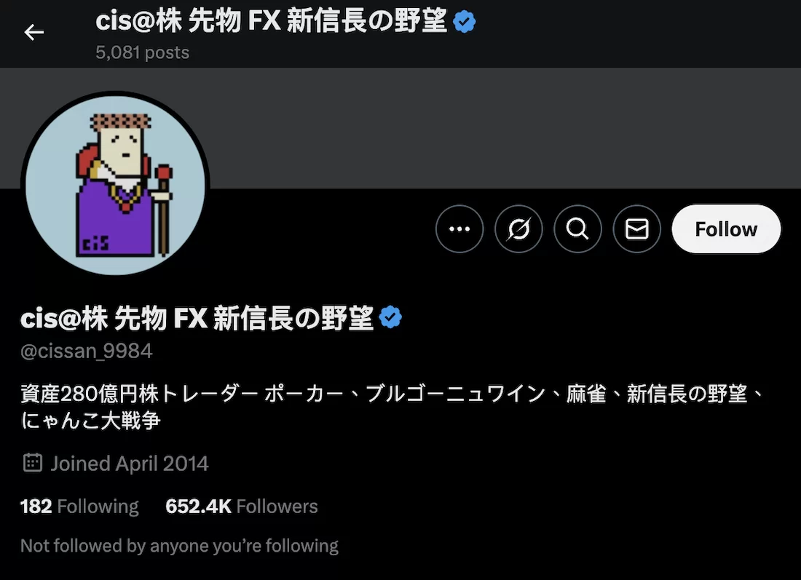
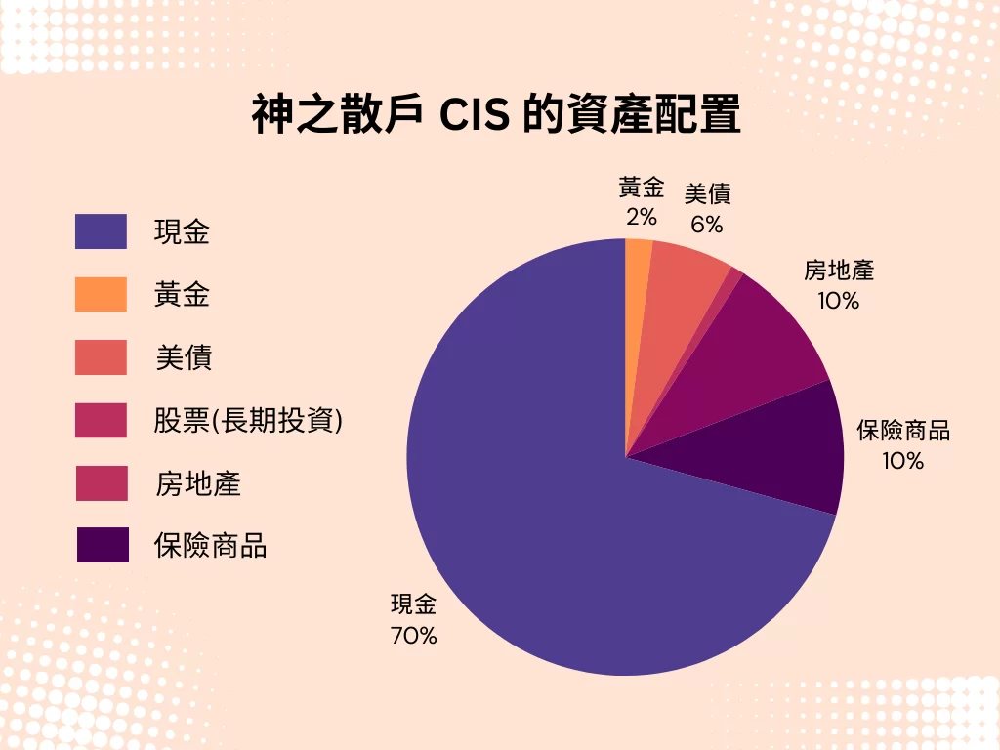
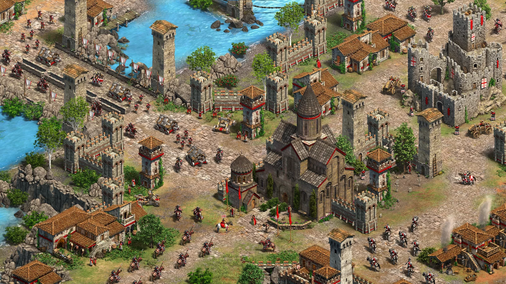

《主力的思維》重點整理與筆記：市場贏家的交易法則 - Jay Yang
在股票市場，多數投資人賺不到錢，不是因為技術不夠，而是因為輸給了自己的本能。我們常聽到「順勢交易」、「停損比停利重要」，但當真正進入市場時，卻總是做出與理性相反的決策。
《主力的思維》這本書，就是一本打破傳統投資思維的作品，由日本知名短線交易者，神之散戶 CIS 撰寫，分享他如何從 100 萬日圓起家，透過交易累積到 2300 億日圓的資產。
想快速瞭解本書重點，可以直接點連結跳到筆記章節：
內容簡介
《主力的思維》並非一本傳統的投資書籍，這本書不會教你如何選股、如何分析基本面，而是分享交易者如何在市場上存活並賺錢。CIS 強調，市場本質上是一場博弈，成功的關鍵不在於預測，而在於反應。
在書籍中 CIS 除了分享如何散戶翻身到主力的經驗外，更不藏私的分享了身為「主力」的投資哲學。CIS 主要討論以下三個核心問題：
1️⃣ 為什麼順勢交易是致勝關鍵，而逆勢操作是致命錯誤？
2️⃣ 為什麼「便宜買進」其實是錯誤策略？
3️⃣ 如何克服人性弱點，成為市場贏家？
作者介紹
CIS (しす) ，是日本最為知名的全職股票投資人。在 2018 年年底的資產總額為 230 億日圓 (約 14 億美元)。
- 從 100 萬日圓起家，透過短線交易迅速翻倍，累積到上百億日圓資產。
- 2005 年，透過「Livedoor 事件」的市場波動，一天內賺取 20 億日圓。
- 2008 年金融海嘯時，成功運用資金管理與市場心理獲利數十億日圓。
- 他曾於 2013 年公開表示，當年獲利 160 億日圓（約 1.2 億美元）。
由於 CIS 的每一筆交易都帶有巨大的影響力，因此被網友稱為「憑一己之力撼動日經平均指數的男人」。也是《主力的思維》的原文書名《一人の力で日経平均を動かせる男の投資哲學》的參考來源。
除了《主力的思維》，他也活躍於日本投資圈，曾在 Twitter 分享交易心得，影響無數交易者。

| 年份 | 重要記事 |
|---|---|
| 1979 | 3 月 CIS 出生。 |
| 2000 | 夏天升上大四時，開戶存入 300 萬日圓，開始投資股票。 |
| 2001 | 法政大學畢業後，進入親戚開的公司上班。 |
| 2002 | 開始玩股票當沖，資產一度銳減至 104 萬日圓，但是自從改變投資心法後，開始持續獲利。 |
| 2004 | 6 月辭職，當時的資產為 6000 萬日圓。後來成為全職操盤手。年底已賺到 2 億日圓 |
| 2005 | J-Com 事件一戰成名， CIS 只花20秒下決定下單，便賺入 6 億日圓，年底更高達近 30 億日圓。 |
| 2013 | 交易了價值 140 億美元的股票。個人交易量佔日本東京證券交易所全年散戶股票交易量的0.5%。CIS 一日最高紀錄是買賣 700 億日圓股票。 |
| 2015 | 黑色星期一，CIS 放空日經 225 指數期貨大賺 3400 萬美元，引來《彭博新聞社》關注，盛讚「A Perfect Play」 |
| 2016 | 11 月 CIS 告訴關注者，他賣空了汽車安全氣囊生產商 Takata 集團的股票。訊息一出 Takata 跌了 8.8%。目前該公司已破產。12 月 CIS 稱買了 200 萬股 TOSHIBA 的股票，而後 TOSHIBA 股價扶搖直上 |
| 2018 | 市場遭遇比特幣大跌，CIS 利用比特幣交易所伺服器的漏洞，大量買入自動停損的比特幣，賺進一億五千萬日圓。 |
《主力的思維》重點筆記
1. 先戰勝本能，投資才有勝算
順勢操作勝率最高
- 持續上漲的股票大機率會再漲，持續下跌的股票大機率會再跌。
- 不要逆勢操作，不要買正在下跌的股票——順勢操作勝算最高。
- 買進的股票如果下跌，應該果斷賣掉。
- 「回檔買進」是錯誤觀念，稍微下跌時買進是一種逆勢操作。 - 不要貪便宜，趁低買進通常是錯的。不要有「稍微下跌時買進」、「想趁便宜的時機買進」的想法。
- 不要預設立場，上漲就要勇敢進場
只顧停利，會錯失大波段
- 趨勢向上時停利，不是聰明的做法。
- 股票下跌 10% 要立刻停損，但上漲 10% 不該急著賣。根據回測結果，繼續下跌的可能性比反彈高。
- 勝率並不重要，最重要的是加總的損益。（作者回測發現，自己的勝率僅 30% 但單筆獲利是虧損的 10-20 倍）
「攤平」是最差勁的技巧
- 明知失敗卻加碼買進，應該承認錯誤，果斷停損。
- 如果不願認賠，最後會輸得一蹋塗地，一切只是投資者不想承認失敗的人性弱點。
- 投資者不能避免損失，但必須避免巨大的損失。
已經停損的股票，能再次買回嗎？
- CIS 認為可以再次買回，但要必須遵循原則，他的原則就是只買上漲的股票。
- 買賣三次以上都沒獲利，就應該放棄這檔股票，換下一支操作。
恐懼之時，就是機會來臨之時
- **市場極端恐慌時，往往是獲利良機。**與巴菲特的名言「別人恐懼我貪婪」理念相同。
- 風險與報酬是天生對立的，投資的目的就是承擔風險換取報酬。需要克服害怕虧損的心理。
- CIS 基本上不避險，承擔風險的目的就是要追求利潤，把成本用來分散風險會稀釋掉利潤。
- 購買前，應該思考上漲與下跌的原因，如果上漲原因比較有利就會買進（判斷風險報酬比是否合理）。反之判斷進場勝率如果不到 50%，根本不該進場。
2. 能創造假設的人，才能戰勝股市
三隻泥鰍理論
CIS 把股市中的獲利機會比喻成三隻泥鰍，分別是：
第 1 隻泥鰍：市場剛開始注意到某個新趨勢或題材，只有少數投資者發現，這時進場的人獲利空間最大，這是最美味的一隻泥鰍。
第 2 隻泥鰍：趨勢已經被更多人注意到，但仍有機會獲利，這時進場的人雖然不如第一波賺得多，但仍有價值，這隻泥鰍還算好吃。一發現有獲利機會就馬上行動。
第 3 隻泥鰍：市場上的大部分人都已經知道這個趨勢，散戶開始湧入，股價可能已經過熱或即將見頂，這時進場的人幾乎沒什麼獲利空間，這隻泥鰍已經沒什麼味道了。
市場上，機會稍縱即逝
- 根據泥鰍理論：第一隻泥鰍最值錢，第二隻還能賺錢，第三隻就沒價值了。
- 不要相信媒體的故事，媒體往往事後解釋股價變動，重點是市場的資金流動、大家正在買賣什麼股票。
- 賭徒要堅持到最後一刻，錢進到口袋了才是真正分出勝負，否則都是「未實現損益」。
- 越希望能是大獲全勝，越容易陰溝裡翻船。
獲利的關鍵：預測未來趨勢
- 最好的假設：是別人還沒發現、但有邏輯性的假設。
- 追逐主流媒體的新聞速度太慢了。越多人知道的資訊，代表其越沒有價值。
- 操作手法也是同理，同樣的方法只要越來越多人知道，這個方法就不管用。
如何發現下一個題材股
- 觀察社群動態、論壇、交易量等異常變化。
- 從市場資金流向，判斷下個可能炒作的板塊。
- 提前選擇可能納入指數的股票，搶在公告前買入。
- 即使是截然不同的產業，股票也會莫明其妙連動。
3. 冷靜審視市場與自己，是邁進勝利的第一步
股價是市場共識，無需自作聰明
- CIS 認為透過基本面分析找便宜股票沒用，股價本身即已充分反映市場共識。
- 市場氣氛是一個可交易的訊號，絕對不是無用的資訊。
市場突發事件的應對策略
- CIS 認為追逐行情是一個追求獲利、承擔風險的行為。
- 市場突然發生利空時，建議優先減碼，而不是猜測底部。
- 市場發生超跌後，建議分批買入，而不是一次性進場。
- 如果市場因短期利多大漲，CIS 反而會考慮會反向操作。
CIS 的投資心法
- 投資一定有風險，害怕風險的人不要玩股票。
- 時間不等人，即知執行才能出奇制勝。
- 即使買入時想法再簡單，一但操作時花的是自己的錢，還是會知意難行。例如：每當股價下跌時，心裡會覺得賣掉比較好，但還是會想很多擔心會不會反彈。
- 股價上漲創新高時，CIS 會欣然買進。一般散戶的想法，股價已經漲到前所未有的高點，擔心是不是要下跌了。
- 大部分的人都想低買高賣，所以不想買在高點，但是股價高低都是比較來的。一檔股票基本上不存在「合理的價格」，只要賣的時間比買進高就能獲利。
最早連戰連敗的經驗
- CIS 早期信仰基本面選股，對各種企業做財務分析，找出便宜被低估的股票買入。當時他挑選了航空業中幾個便宜的標的，結果越買跌越兇。
- 後來經過反省，CIS 認為與其思考股票並未反映企業價值，不如搞清楚，股價本身就是答案，是所有投資人公認的數字。即使看起來很便宜，也是誰都知道的資訊。
- 除非有內線交易，能事先掌握到價值波動，否則沒有人知道企業的潛力與股價的連動關係。
- 散戶並沒有資訊優勢。如果不先下手為強，就無法從別人手中把財富搶過來。
股市只能在股市學習
- 寫在書裡的投資方法都是過去的事情，對未來毫無幫助。CIS 認為市場是動態變化的，過去的成功模式未必適用於未來。
- 操盤手的困難點在，必須一再否定自己的理論。某種方法曾經奏效，也可能因市場環境變化而失靈。因此成功的投資人必須敢於否定過去的認知，迅速調整策略。
- 無法客觀審視自己的人肯定沒有勝算，投資人需要謙虛地從市場學習，而不是試圖證明自己是對的。
Twitter 的新聞比 NHK 還快
- CIS 平常只看股價波動跟 Twitter：通常是先看股價波動，發現不尋常變化就減碼，最後才會看新聞。
- 需關注能最早取得資訊的地方。川普贏得總統大選時，當地的 Twitter 最早傳出訊息，路透社跟彭博的新聞 30 秒後才跟上。
- 利用時區優勢：日本、美國、歐洲的股票市場，星期一最早開市的是日本，因此週末發生世界級大事件，日本股市會首當其衝。每當歐美政治出狀況，賣盤會傾巢而出，日本常會出現賣超。
- 股價會因為羊群效應過度反應：以 CIS 經驗來說，上述情況 90% 都能逆勢買進，因為大多數人不看好。反之亦然，美國週末如出現利多訊息，道瓊期貨大漲，日經指數也跟著大漲，則要賣空，因為通常很快就會打回原型。
提防內線交易
- 訊息容易走漏風聲，市場上出現可疑的賣盤或買盤，最好認為那是內線交易
- 疑似被炒作的股票就是機會。價格波動劇烈的股票是絕佳的當沖標的。第一時間上車，趕快賣掉，落袋為安。
資金盲目流動時，正是獲利良機
- 機構投資者（如基金、保險公司、政府基金）通常有固定的資金配置規則，會根據某個規則，得出在特定期間要買某股票的結論，被作者稱為「盲目的資金」，
- 這種「必須執行的買賣」，往往會產生短期的資金盲目流動，股價因此被推高或壓低，與基本面無關。
- 資金流入時可順勢而為，提早買入或搭上順風車，短線能撈一筆。
- 反之資金流出時，短期賣壓可能會過度反應，判斷從倒貨倒完的地方開始買進。
4. 職業操盤手的思維
本段主要指的是極短線的當沖交易，某些概念也適用於隔日沖：
交易本質是「搶奪金錢的遊戲」
- CIS 對配息沒有興趣，因為沒賺頭。
- CIS 不做長期投資，理由是連明天的股價都不確定了，如何確定半年一年，甚至是十年後。比起放眼未來，抓住現在的優勢比較有搞頭。
- 追求流動性與波動：早盤最活躍，9:00 – 09:20 是日本股市短線交易的最佳時間。
短線交易的執行細節：
- 判斷市場趨勢：交易者需要在極短時間內決定是順勢交易還是逆勢操作
- 當沖交易的「停損位」與「加碼時機」：交易者通常設有嚴格的停損，因為當天就要結束交易，不能承受太大損失。隔日沖可能允許更寬鬆的停損範圍。
- 降低流動性風險：當沖交易需要在市場流動性高時操作，因為這樣才能快速進出場，不影響價格。如果流動性不足，可能會導致無法順利賣出或買入。
資金管理與倉位控制
- 高勝率時重倉，無法確定時輕倉：當天結束交易時，必須確保整體盈虧穩定。不要輕易放大部位，除非有極高勝率。
- 根據市場變化，靈活調整資金配置：例如發現市場震盪劇烈時減少部位，趨勢明確時加大部位。
- 把錢砸在波動較大的個股，是最有效率的投資手法。特別是資金小的時候。
- 資金大的時候容易買到漲停，賣的時候會有倒貨效應。因此當資產變多時，很難有效率專注在單一股票上，此時需要專注整體的表現。
投資房地產是自討苦吃
- 投資房地產與其說是投資，不如說是強迫勞動。CIS 早期買了大樓想出給便利商店，發現是「早知道就別買」，要處理收租、折舊、招商、修繕、處理庶務工作⋯⋯不如做其他更輕鬆能賺錢的事情。
- CIS 偏好投資流動性高的資產，例如股票，因為可以迅速調整資金配置。當房地產市場不好時，即使你擁有大筆資產，也可能無法迅速變現來投資其他機會。
- CIS 認為房子不是必要的負擔，而是生活方式的選擇。他寧可租飯店房間，享受能請人櫃檯把整箱麥茶送到家門口的便利性。
投資最重要的事情：賺錢的效率
- CIS 認為現金就是力量。把資金花在哪必須以「效率為優先」， 不該為了社會價值觀（擁有房產）犧牲投資自由度。
- CIS 分享了一個案例：他朋友資產 7 億，拿 6 億去買房子，剩下 1 億要繼續玩股票。房地產鎖住了大量資金，影響了朋友的賺錢效率。
- 資金應該集中在能產生更高報酬的地方，不建議用來購買低流動性的資產（如房地產、奢侈品）。CIS 對物質生活不講究，穿 UNIQLO，也不買遊艇與別墅，因為他認為真正的財富是來自於投資的自由，而不是擁有昂貴的物品。
- 越是靠投資賺錢的人，花在投資以外的錢就要更小心謹慎。沒了本金，就無法賺大錢。
- CIS 的投資策略是「集中資金在最大報酬的機會上」，而不是分散投資來降低風險。最有效率的機會就是，找出能大撈一筆的機會，盡可能把全部財產投進去。因此才會選鎖定股價波動劇烈的個股，小心找出能孤注一擲的機會。
CIS 的資產配置

| 部位 | 比例 | 說明 |
|---|---|---|
| 現金 | 70% | CIS 的交易方式需要極高的流動性，因此現金對他來說是最好的資產。市場會不斷產生短期機會，擁有現金才能即時抓住機會。當市場動盪時，現金讓他能夠保持安全，避免被市場波動吞噬。 |
| 黃金 | 2% | 資金靈活性比避險更重要，所以只配置 2%。當市場劇烈波動時，CIS 更願意靠交易獲利，而不是依賴黃金作為保值工具。 |
| 美債 | 6% | 日幣的貶值風險一直存在，持有部分美債可以對沖日圓貶值風險。但股票交易的獲利能力遠超美債，所以配置極低。 |
| 股票 | 1% | 指的是股票的長期投資部位。市場永遠在變，長期投資者容易受到不可控風險影響。 |
| 房地產 | 10% | 這筆投資的目的並非獲利，而是「理解市場運作」，讓自己不會對這個領域完全無知。 |
| 保險商品 | 10% | 保險產品本質上是「風險管理工具」，而不是高報酬投資。投資的目的也是學習。 |
CIS 對於退休金的運用
- 不相信人性：不需要把退休金交給基金經理人操作，要是真的有這麼多資金，不如交給 AI 操盤。
- CIS 建議投資美國市場，投資日本國內市場像是奪取日本同胞的錢。
- 退休後，現金流比資產增值更重要：分散投資美股，高殖利率、看起來快倒的公司（短期財務狀況不佳，但經濟復甦後仍可能回穩）。
開投資公司的經驗
CIS 也在書中分享了開投資公司時的經驗，以及對人性本能的觀察：
- 即使員工學習相同的知識，最終交易結果仍然大不相同，這說明「技術」不是唯一決定勝負的關鍵，人性才是。
- 同樣的交易策略，不同的人執行，結果可能完全相反：會獲利瞭解的人就會馬上停利、有人動不動就停損、有人在股價漲停時有勇氣加碼，而有人則害怕高位進場。
- 「人的本能會反映在買賣上」，克服人性才是投資的關鍵：漲停時，大多數人選擇觀望或獲利了結，但真正能賺大錢的人，卻敢於在這時候繼續買進，這需要很大的勇氣執行
- 光靠上課是不行了，人的本能會反映在買賣上，一扯到金錢，人就會輸給本能。
CIS 曾兩次創業失敗，這顯示了**「交易」與「經營企業」**是兩種完全不同的挑戰。
- 投資的風險是「市場的不確定性」，但創業的風險來自於「人事管理、資金運營、競爭壓力等現實問題」。
- CIS 擅長的是交易，但創業涉及管理與決策，這些不是他的強項，因此他並不適合創業。
5. 靠玩遊戲訓練投資技術
遊戲訓練投資的核心技能
遊戲是作者的投資技巧原點，CIS 透過玩遊戲（快打旋風、網路創世紀、世紀帝國）訓練集中力、判斷力、持續力。買股票也要有快速判斷的反射神經。

世紀帝國 Age of Empires：受全職投資們一致推崇的遊戲
作者的童年經驗
- CIS 小時候去柑仔店玩抽抽樂，找出期望值比較高的法則跟攻略法
- 在班上自行發行過虛擬貨幣在朋友間流通，透過代幣可以兌換零食文具，去作者家打電動。過程瞭解到貨幣發行太多，其價值就會下跌。
- 比起玩遊戲的輸贏，CIS 更重視「如何提高勝率」。作者從小鋼珠機臺中學到，如何挑勝率高的機臺、分配資金讓勝率最大化。
6. 成為億萬富翁，全拜網路論壇所賜
交易心理學的應用
- 人性在賠錢時，人會不願認輸；賺錢時，人會想要過早獲利了結。
- 市場本能是錯的，真正賺錢的方法就是克服這些錯誤的本能反應。
- 每次交易都應該是一個獨立事件，不要被過去的盈虧影響。
投資初期的巨大虧損與轉變
- 剛開始做股票一直賠錢，700 萬丟進股市後僅剩 104 萬，累計虧損超過 1000 萬。
- CIS 認為，除了極少數厲害的操盤手外，投資世界的賺與賠只有毫釐之差，運氣成分很大。
- 市場充滿偶然性，極端情境下才能真正勝過經濟指標。
放棄長期投資，轉向短線交易
- 與網路論壇的股市版網友交流後，CIS 放棄了長期投資策略。
- 股價便宜或貴、企業成長性這些指標，往往只是投資者的主觀認知，並不一定能反映未來漲跌。
- 真正賺錢的人，更多是基於短期的股價波動、技術面走勢，或市場對個股納入指數的預期來做交易。
- 資訊的速度決定優勢，口耳相傳的訊息比媒體報導更快、更具影響力。
累積 6,000 萬資產後辭掉工作
- 資產快速增長的同時，身體卻出現嚴重警訊。
- 長期交易壓力導致健康亮紅燈，出現掉髮、腸胃不適等問題。
- 專注於工作往往忽略健康管理，長時間專注交易導致睡眠不足，影響免疫系統。
- 後來為了健康與家庭，CIS 決定只交易早盤，並改善生活習慣，身體狀況逐漸回復。
- 學會平衡交易與生活，才能長期穩定發展。
7. 給新手投資者的建議
快的人永遠快，慢的人永遠慢
- 投資市場的贏家往往都是「行動快的人」，而不是「想得快的人」。
- 能賺到身家萬億的，都是攻擊型投資者，一旦發現機會，就會果斷出手。
- CIS 自認為自己是防守型投資人，一面停損、一面伺機而動。
策略：長期投資虧損公司
- 經濟危機時，買進被嚴重低估的公司，等待景氣回暖後獲利。
- 但要注意，若公司破產，就沒有真正的「底部」。
- 2008 年金融海嘯，雖然有不少低價買點，但 CIS 也經歷了不動產信託基金跌停的慘痛經驗。
- 2006 年 1 月 Livedoor 事件，虧損五億，顯示市場極端風險無法預測。
如何投資不景氣時的虧損公司？
- 若資金有限（50-100 萬日圓），CIS 認為可以從 IPO 公司當沖開始，因為波動率較大。苗頭不對立刻停損，上漲就抱住，執行當沖模式。
- 不想做功課又想賺錢的人，可以考慮景氣迴圈股，投資在景氣低迷時虧損的公司。當景氣回暖，這類公司可能股價翻倍甚至更高。
- 市場容易過度悲觀，當大家都恐懼時，往往是進場機會。反之景氣大好時，股價已經反映樂觀預期，這時候買進風險較大。
投資人如何戰勝 AI？
- AI 不敢承擔高風險，但人類有勇氣承擔，因此高風險高報酬領域仍然是人類的優勢。
- 風險越大，潛在的報酬也越高，這是 AI 無法取代的領域。
市場情緒與危機應對
- 財富增加的同時，金錢的價值也不斷下跌，市場並非靜態的。
- 危機與轉機只有一念之差，市場恐懼時，投資人容易短視、做出錯誤決策。
- 景氣變差時，市場動盪不安，可能是獲利的機會，也可能讓投資人賠到傾家蕩產。
- 冷靜才能做出正確決策，避免市場情緒影響交易。
虛擬貨幣交易策略
- 上漲買入、下跌賣出，不要在下跌時買進。
- 市場氣氛會影響投資情緒，虛擬貨幣和其他金融商品的投資心理是一樣的。
夠努力就能贏過大多數人
- 世界上存在努力與回報的螺旋，只要用功就能成功。成功帶來快感，因此會繼續投入更多努力，形成正向迴圈。最終越來越進步，越來越成功。
- 但 80% 的人對賠錢感到有壓力，這類人適合當上班族，而不是投資人。
- 追求穩定並不會帶來效益極大化，投資本質上是風險與報酬的交換。
賭場贏家也是股市贏家
投資與賭博的相似性
- 股價與撲克牌類似，都是機率與風險的遊戲。
- 行情只會上下波動，交易的本質不是進場（下注）就是退場（蓋牌）。
- 不停損的人，等於永遠都在進場，這是極高風險的行為。
- 每次進出場都有風險，投資人要判斷哪種情境下獲利機率最大。
撲克牌與麻將 vs. 股票交易
- 股票與撲克牌最大不同點：股市沒有固定玩家與籌碼上限，只能看到買賣成交量。而撲克牌能透過算牌，計算籌碼，本質上是機率遊戲，甚至是拿到爛牌虛張聲勢都能考量進機率。
- 但兩者的共通點是，懂得「風險管理」的人，通常在交易與賭博中都能勝出。
- 麻將跟撲克牌是同一類遊戲。善於比較風險與報酬的人，通常比較會打麻將。
- 麻將中，「下注」與「蓋牌」的判斷，遠大於牌面的好壞對勝負結果的影響。
- 投資市場也是如此，決策時機的重要性遠大於分析技巧。
21 點算牌法與投資應用
- 普通算牌法：計算 10、J、Q、K、A 等高點數牌的數量，判斷剩餘的機率。高點數多時增加籌碼，反之亦然。
- CIS 的方法：除了高張牌，還會記住 5、4、6 的張數，以計算牌面會變得很好的機率。
- 這種邏輯應用在投資上，就是透過資料與市場行為，推測未來的機率。
股票市場是最刺激的賭場
- 股票市場既是知識競技場，也是最刺激的遊戲，更是能增加財富的遊戲。
- 市場永遠充滿未知與變數，因此學習與適應力比固定策略更重要。
- 沒有人能百分百預測市場，但透過學習與經驗累積，可以提升勝率。
- 股市如同賭場，是一場資本博弈的遊戲，懂得風險與報酬的人才能勝出。
讀後心得
身為一名臭散戶，能透過這本書窺探影響市場價格的「主力們」，究竟是如何思考與參與股市博弈。在短線交易的角度來看，《主力的思維》提供了非常有價值的參考。散戶有望透過揣摩主力的進出場策略，搭著大戶的順風車一起吃香喝辣。
CIS 是全職投資人，能夠投入大量時間研究市場，因此他極度重視資金的流動性與利用效率，不偏好非現金資產。
CIS 的成功在於，其懂得在正確的時機，把資金放在正確的地方。但對於普通上班族來說，我們只能偶爾關注市場，不可能全天候盯盤，資金量體也不夠大，因此散戶若完全照搬 CIS 的策略，有可能會更快畢業。
書中的許多交易心法，如紀律止損、承認錯誤、評估勝率等，其實都是投資界常見的概念，但真正能夠執行的人極少。這些道理我們都懂，卻因為人性難以克服而無法做到。
這讓我想起股市中流傳的一句話：
大部分的人去菜市場買菜時，總願意貨比三家，找到最便宜幾十元的蔬果。但在下單股票時，卻不願意花一樣的心力研究標的。
投資市場並不會對任何人仁慈，唯有克服人性、培養紀律，才能真正存活下來。